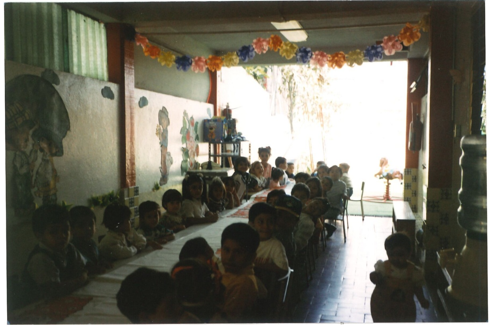
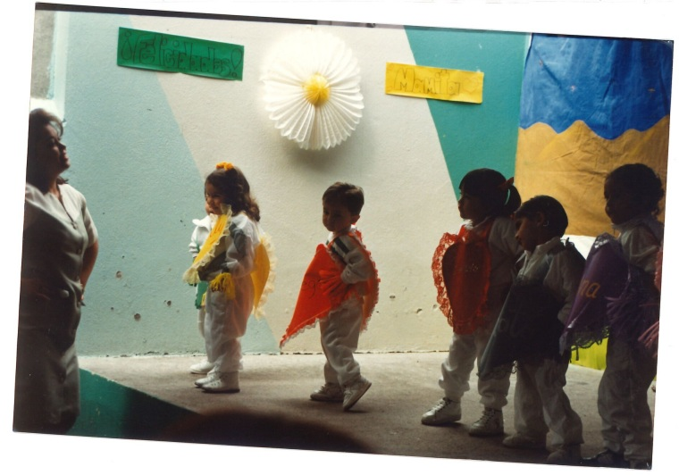
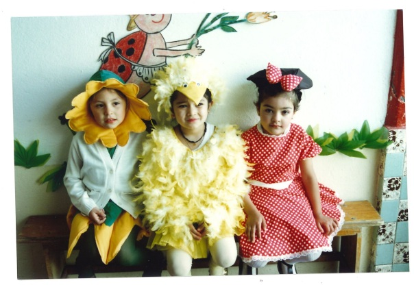
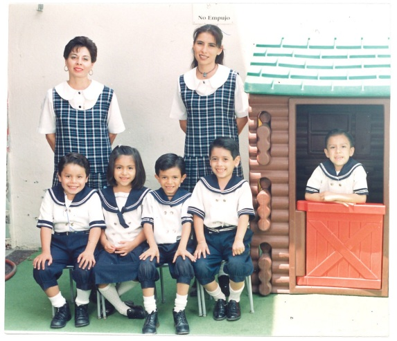
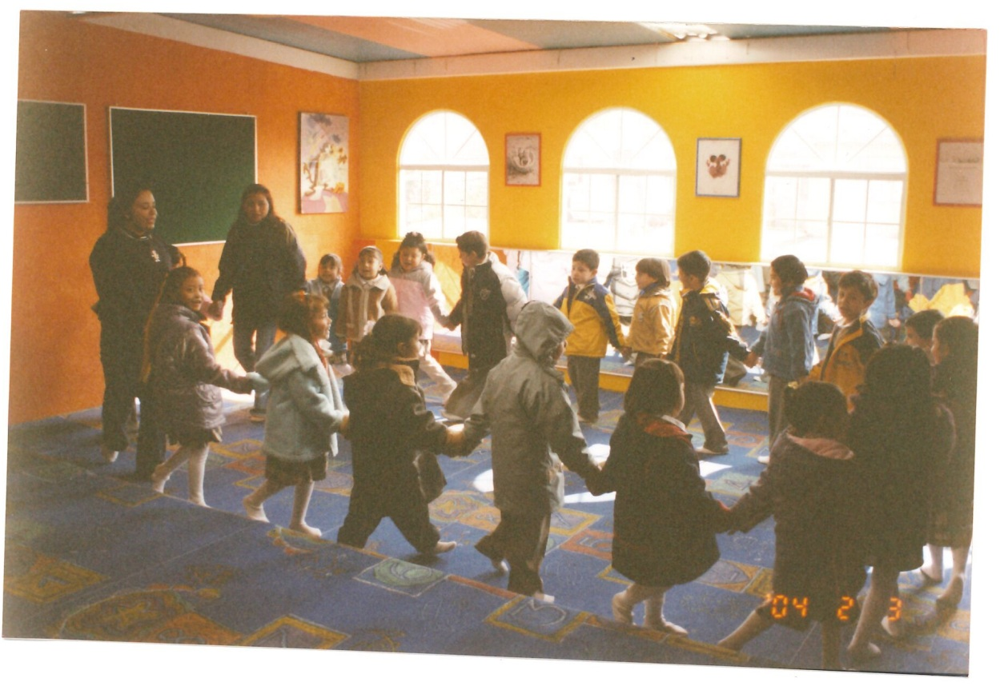

Somos una comunidad educativa en busca de la excelencia. Compartimos un espacio lúdico centrados en preparar niños integrados y socialmente competentes en colaboración íntima con sus padres.
Nuestro colegio abrió sus puertas en el año de 1980 y hoy en día hemos visto pasar gran cantidad de generaciones, las cuales forman parte de esta gran familia ya que hemos contribuido en la educación de sus pequeños, llenando de sonrisas las paredes de este Colegio.
En el Jardín de Niños estamos preocupados por ofrecer día a día un servicio de excelencia en la educación inicial de los pequeños. Hoy en día estamos incorporados a la Secretaría de Educación Pública la cual se encarga de supervisar periódicamente que se cumplan con los lineamientos necesarios.
El Jardín de Niños Federico Froebel es una comunidad educativa en busca de la excelencia, compartimos un espacio lúdico y convivimos con nuestros alumnos en su desarrollo educativo. Sin embargo consideramos que nuestra tarea educativa es delegada y colaboradora, nunca sustitutiva de la misión de los padres como primeros y principales responsables de la educación.
Nuestro principal objetivo es preparar niños independientes, felices, integrados y socialmente competentes. Buscamos un trato personalizado y un seguimiento adecuado para cada uno de nuestros niños.

6 conjuntos de materiales progresivos: esferas, cubos, cilindros y bloques de construcción. Cada "Don" desarrolla una habilidad cognitiva específica: desde la percepción espacial hasta el pensamiento abstracto.
Estaciones sensoriales con arena, agua y semillas. Los niños observan, experimentan e hipotetizan — la ciencia comienza en la experiencia, no en el pizarrón.
Música, arte plástico, teatro y movimiento corporal. La expresión emocional es tan importante como la cognitiva. Cada niño tiene un lienzo propio para decir quién es.
Actividades de clasificación, patrones, seriación y resolución de problemas. Con materiales tangibles, sentamos las bases del pensamiento computacional sin pantallas.
Juego cooperativo, resolución de conflictos y empatía. En grupos pequeños (ratio 1:8), cada niño aprende a ser individuo dentro de una comunidad.
Cero castigos punitivos. Límites firmes con amor. Nuestras maestras están formadas en disciplina positiva y regulación emocional infantil.
Bases sólidas para la formación integral de nuestros alumnos y la confianza de las familias.
Somos un Colegio COMPROMETIDO en construir un espacio propicio para los pequeños, aplicando el diseño de situaciones didácticas educativas que a través de la intervención docente y la participación activa de los niños se promueva una serie de experiencias dando así oportunidad de desarrollar sus habilidades y capacidades afectivas, sociales, cognitivas construyendo así una base de APRENDIZAJES PERMANENTES que contribuyan a su formación integral.

Ser un colegio donde se ofrezca con un esfuerzo continuo una educación oportuna, eficiente mediante la innovación constante para brindar servicios de CALIDAD, INNOVADORES y que siempre estén a la vanguardia de los avances pedagógicos mediante la transformación de prácticas que sirvan de base para la formación de niños y niñas con aptitudes y valores firmes, generando satisfacción y confianza que contribuyan a enfrentar, comprender y dar respuestas eficientes a los entornos cambiantes de la vida futura.

Construir aprendizajes a través del respeto y la individualidad y así satisfacer las necesidades de la comunidad escolar.

Brindarles herramientas para que puedan desarrollarse considerando los criterios de los demás, fomentando la aceptación para que crezcan con buena autoestima y así mejorar la sociedad en la que viven.

Brindarles una educación que les permita enfrentarse a los retos de la vida sin importar limitaciones, fomentando su autonomía y promover su superación con confianza y optimismo.